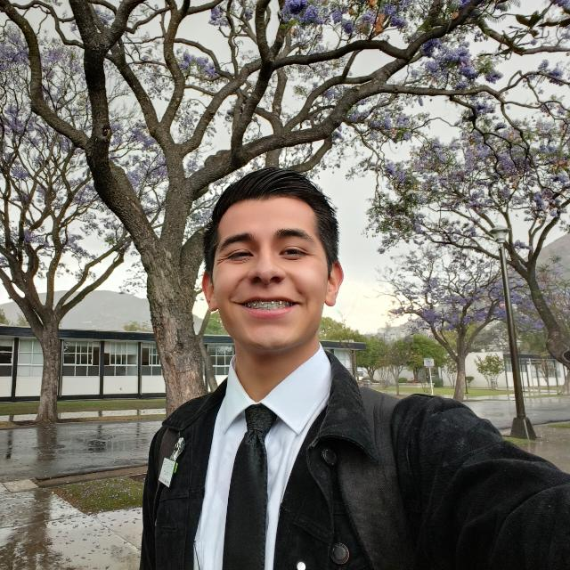

Mosiah Mares | WDD 130

Hello, I am Mosiah Mares, I'm from Mexico City, Mexico. I'm currently enrolled in BYU. I'm work at the MTC Mexico, where I help the nre generations of missionaries to be ready to spread the word of God around the world. I'm 21 years old, and a random curiosity about me it's that I love to learn new languages such as japanese or even portugese.